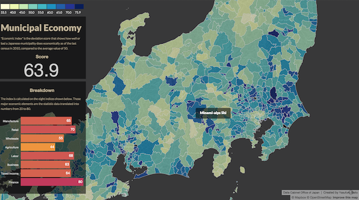

Hello, my name is
Yasufumi Saito.
I'm a DATA JOURNALIST
I'm an INTERACTIVE STORYTELLER
I'm a WEB DESIGNER

Municipal Economy in Japan
This is a data visualization project that shows XXXXX here comes explanation about what I did, and the tools that I used for the project.

How Japanese spent money?
This is a data visualization project that shows XXXXX here comes explanation about what I did, and the tools that I used for the project.
How Japanese spent money?
This is a data visualization project that shows XXXXX here comes explanation about what I did, and the tools that I used for the project.
Slide 5
Slide 6
Slide 7

Standing on a sweet spot where journalism and web technology intersect, I want to be a part of its future.
Start
Before coming to the U.S., I used to work for a Japanese local daily for almost seven years. It was stable and peaceful life, but I threw it away.
Slide 3
Why?
Slide 4
Because I noticed we were in the midst of the biggest transition from print to digital, when a journalist can cast a spell on people by coding.
Slide 5
We journalists can be wizards, and stories can be more immersive, interactive and entertaining as people want.
Slide 6
Two years has past since I quit the local daily. Now, I'm here to revolutionize digital journalism.